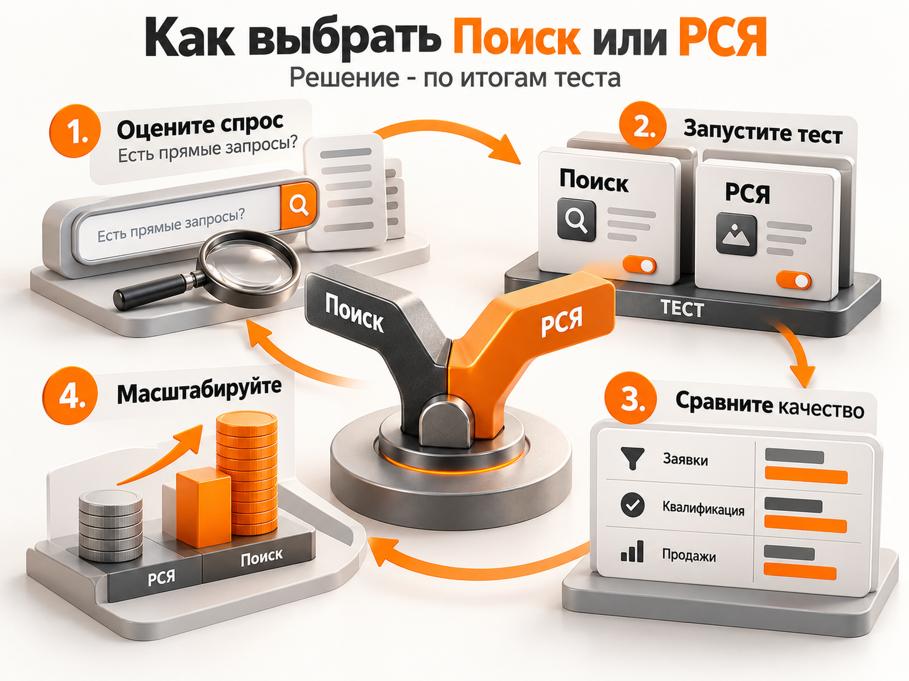

Блог о платном трафике
Поиск или РСЯ: что выбрать в Яндекс Директе
Если клиенты уже ищут товар или услугу, в первую очередь стоит проверить рекламу на поиске Яндекса. Если прямого спроса мало, нужно расширить охват или напомнить о предложении заинтересованным людям, полезнее может оказаться РСЯ. Но окончательно выбирать канал лучше по стоимости целевых обращений и продаж, а не по цене клика.
Поиск и РСЯ не конкурируют за звание универсально лучшего источника. Они решают разные задачи и могут дополнять друг друга. В одних моих проектах практически все обращения приносил поиск, в других основной поток заявок приходил из сетей. Ниже объясню, от чего зависит результат и как проверить его на своём бизнесе.
В чём главное отличие поиска от РСЯ
На поиске Яндекса реклама отвечает на уже выраженную потребность: человек вводит запрос и видит подходящее объявление. В Рекламной сети Яндекса (РСЯ) объявления могут показываться на сайтах, в приложениях и сервисах, когда пользователь не ищет товар или услугу прямо сейчас. Для подбора показов используются доступные сигналы об аудитории и условиях размещения.
Например, запросы «заказать эвакуатор», «доставка пиццы», «вскрытие замков», «купить промышленный компрессор» или «юридическое сопровождение бизнеса» указывают на конкретную задачу. На поиске реклама появляется в момент её решения. В РСЯ объявление может заинтересовать потенциального покупателя раньше или вернуть к рассмотрению предложения.
| Критерий | Поиск | РСЯ |
|---|---|---|
| Состояние спроса | Пользователь уже сформулировал запрос | Потребность может быть неочевидной или ещё не сформированной |
| Момент контакта | Во время активного поиска | Во время посещения площадок и сервисов |
| Потенциальный объём | Ограничен доступным поисковым спросом | Может быть существенно шире |
| Стоимость клика | Часто выше в конкурентных тематиках | Может быть ниже, но не гарантированно |
| Стоимость заявки | Зависит от цены перехода и конверсии | Зависит от цены перехода, креатива, аудитории и конверсии |
| Основной риск | Дорогой аукцион и ограниченный спрос | Много недорогих, но нецелевых переходов |
| Типичная задача | Перехватить существующий спрос | Расширить охват, заинтересовать и вернуть аудиторию |
Подробнее о механике рекламной сети я написал в статье «Что такое РСЯ в Яндекс Директе».
Когда поиск лучше РСЯ
Поиск особенно полезен, когда человеку нужна услуга после конкретного события и он сам начинает искать исполнителя. Причём потребность не обязательно должна быть срочной: главное, что в определённый момент возникает ясная задача.
Самый наглядный пример - эвакуатор. Если машина сломалась ночью, человек открывает поиск и вводит «эвакуатор рядом». Рассчитывать, что он сначала увидит баннер в РСЯ и только потом закажет услугу, неразумно. Похожая логика у аварийного вскрытия замков, срочного ремонта и доставки еды.
В этих нишах отдельный переход может стоить дорого. В моей практике в перегретых поисковых аукционах цена клика иногда достигала нескольких тысяч рублей. Но высокий CPC сам по себе не означает, что канал невыгоден. Переход за 1000 рублей может принести заказ, а десять переходов по 100 рублей могут не принести ничего.
Есть и менее очевидный пример из моей практики: B2B-юридический консалтинг. Компания оказывала узкие услуги, связанные с Федресурсом, регистрационными процедурами, Роскомнадзором и другими обязательными задачами бизнеса. Около 99% обращений в этом проекте приходило с поиска, а баннерная реклама почти не давала заявок.
Дело не в продолжительности сделки. Пока у компании не возникла конкретная юридическая обязанность, предложение ей попросту не нужно. Когда появляется задача и срок, сотрудник ищет исполнителя. Поэтому правило «длинная сделка - значит РСЯ» не работает без анализа того, как возникает спрос.
Подробности есть в моём кейсе о продвижении юридического консалтинга. Отдельно разобрал и цену клика в Яндекс Директе.
Когда РСЯ может быть эффективнее поиска
РСЯ имеет преимущество, когда потенциальные покупатели есть, но мало кто ищет продукт по прямому коммерческому запросу. Например, услуга новая, сложная или аудитория ещё не знает её названия.
Даже идеально настроенная поисковая кампания не создаст новых запросов в выдаче. Если подходящего спроса мало, рекламодатель ограничен его объёмом. РСЯ позволяет проверить более широкую аудиторию: интересы и привычки, сигналы поведения, сегменты Метрики и другие доступные условия показа.
В моём B2B-проекте по выкупу акций с высоким чеком прямого поискового спроса практически не было. Основной объём обращений дали РСЯ и Мастер кампаний. Это пример ситуации, когда аудитория существует, но собрать её только на поиске трудно. Кейс по выкупу акций показывает этот сценарий подробнее.
Другой пример - фабрика детской одежды: основной поток заявок в проекте приходил из РСЯ, хотя поиск тоже работал. Здесь сеть помогала охватывать аудиторию за пределами прямых поисковых запросов. Подробнее - в кейсе фабрики детской одежды.
РСЯ полезна и для повторного контакта с заинтересованными посетителями сайта. При этом ретаргетинг как механизм доступен не только в сетях: в Директе сегменты аудитории могут использоваться и на поиске с учётом условий показа.
Где лиды дешевле: на поиске или в РСЯ
Универсального ответа нет. В РСЯ клики нередко обходятся дешевле, но это не означает, что дешевле окажутся целевые обращения и продажи. Поиск может приводить более дорогой трафик с более высокой готовностью к покупке.
Сравнивать два источника только по CPC (цене клика) или CPL (стоимости заявки) недостаточно. Нужно учитывать, сколько обращений подходит бизнесу и сколько из них заканчивается покупкой.
Пример: дешёвые заявки, дорогие продажи
Ниже условный расчёт для двух рекламных каналов, а не средние показатели рынка и не результат конкретного клиента.
| Показатель | Поиск | РСЯ |
|---|---|---|
| Клики | 100 | 300 |
| Цена клика | 120 ₽ | 30 ₽ |
| Расход | 12 000 ₽ | 9 000 ₽ |
| Все заявки | 12 | 15 |
| Стоимость заявки (CPL) | 1 000 ₽ | 600 ₽ |
| Квалифицированные заявки | 8 | 3 |
| Продажи | 3 | 1 |
| Рекламные расходы на продажу | 4 000 ₽ | 9 000 ₽ |
В этом примере РСЯ выигрывает по цене клика и заявки, но проигрывает по расходам на привлечение покупателя. Расчёт простой: рекламный расход делится на количество продаж. Он не учитывает себестоимость товара, зарплату отдела продаж и повторные покупки.
Одна продажа в условном примере не даёт статистически надёжной оценки канала. Цифры показывают принцип расчёта, а не рекомендуемый размер теста. В реальной кампании вывод нужно подтверждать достаточным количеством обращений, их качеством и данными CRM.
Для расчётов пригодится разбор CPA в Яндекс Директе и квалификации лидов.
Где больше трафика: на поиске или в РСЯ
Потенциальный охват РСЯ обычно шире. Количество поисковых запросов ограничено реальным спросом: нельзя бесконечно увеличивать бюджет и получать пропорционально больше новых клиентов с одних и тех же ключевых фраз.
В РСЯ охват может быть заметно больше, но сам по себе он не является преимуществом для бизнеса. Алгоритм может находить дешёвые переходы, которые не приводят к полезным обращениям. Поэтому важны не только показы и клики, но и качество аудитории, площадок и конверсий.
Если сеть приводит много визитов без результата, проверьте отчёты, корректность целей, качество заявок и места размещения. Подробнее - в материале «Минус-площадки для РСЯ».
Где быстрее получить результат
При сформированном коммерческом спросе поиск нередко позволяет быстрее проверить предложение: человек уже знает, что ему нужно, и сравнивает исполнителей. Особенно это заметно в срочных услугах.
В РСЯ результат зависит от того, удалось ли подобрать подходящую аудиторию, насколько убедителен креатив и способен ли оффер заинтересовать человека вне момента активного поиска. Иногда сети требуют больше времени на проверку гипотез и накопление данных.
Но обратная ситуация тоже возможна. Если запросов почти нет, поисковая кампания будет собирать недостаточно переходов, а в РСЯ тест может быстрее дать полезную статистику. Выбирать канал только по предполагаемой скорости запуска нельзя.
Что опаснее: поиск или РСЯ
У поиска главный риск - дорогой конкурентный аукцион при ограниченном количестве подходящих запросов. У РСЯ - расход на большое количество дешёвых, но неподходящих переходов и обращений.
Опасность есть и в неправильной аналитике. Отчёт с хорошим CTR, низким CPC и большим числом отправленных форм может выглядеть убедительно, пока отдел продаж не выяснит, что большинство заявок нецелевые.
Поэтому для обоих каналов нужно отделять клики от заявок, а любые заявки - от квалифицированных обращений и продаж. Если CRM не связана с Директом, хотя бы вручную размечайте обращения по источникам и причинам отказа.
Как выбрать Поиск или РСЯ при ограниченном бюджете
При небольшом бюджете не стоит автоматически делить деньги пополам между поиском и РСЯ. Сначала определите наиболее сильную гипотезу: где аудитория ближе к обращению и хватит ли спроса для получения данных.
Если товар или услугу уже активно ищут, а ресурс позволяет проверить только один канал, разумно начать с наиболее целевых поисковых запросов. Если прямого спроса почти нет, первым тестом может стать РСЯ с ясным предложением и подходящими аудиториями.
Для оценки денег на тест используйте собственную допустимую стоимость заявки и количество обращений, достаточное для первичного анализа. Формула: бюджет теста = ожидаемая стоимость заявки × планируемое число заявок. Это расчёт гипотезы, а не обещание результата. Если оценка CPL ещё неизвестна, сначала изучите аукцион и экономику сделки, а не подставляйте универсальную сумму.
Важное ограничение: если денег хватает всего на несколько кликов или заявок, одновременное разделение на несколько кампаний усложнит оценку и накопление конверсий. Лучше проверить одну обоснованную гипотезу, затем расширять тест. Подробнее о планировании - в статье «Сколько денег нужно на тест Яндекс Директа».
Как провести тест поиска и РСЯ и выбрать победителя
Надёжнее сначала проверить спрос и два источника на сопоставимых условиях, а потом перераспределять деньги по стоимости квалифицированного клиента. Нельзя объявлять победителя по нескольким случайным заявкам.
- Оцените спрос. Проверьте прямые коммерческие запросы, их географию и примерный объём. Определите, можно ли заинтересовать аудиторию без прямого запроса.
- Запустите тест. При достаточном бюджете подготовьте сопоставимые гипотезы для поиска и РСЯ: одно предложение, корректные посадочные страницы, настроенные цели и понятная атрибуция обращений. При дефиците средств проверяйте каналы последовательно.
- Сравните качество. Смотрите не только расход и заявки, но и долю квалифицированных лидов, продажи, расходы на клиента, причины отказов и достаточность выборки.
- Масштабируйте результат. Увеличивайте расходы в канале с подтверждённой экономикой, не забывая про ограничение поискового спроса и изменение качества аудитории при расширении РСЯ.

Для раздельного управляемого теста удобно использовать Единую перфоманс-кампанию (ЕПК): в ней можно выбрать показы только на поиске или только в Рекламной сети Яндекса. Мастер кампаний устроен иначе: он создаёт размещение сразу на поиске и в РСЯ, отдельно отключить один из этих каналов в его настройках нельзя. Это важно, если нужно управлять расходами на источники независимо.
Мастер кампаний может быть удобен для первого общего запуска. После получения статистики оцените результаты по местам размещения. Если требуется более точное управление, используйте отдельные ЕПК с соответствующими настройками показов. При этом ни выбранный тип кампании, ни первые конверсии сами по себе не доказывают эффективность конкретного канала.
Когда имеет смысл использовать поиск и РСЯ одновременно
Оба источника нужны, когда они решают разные задачи и каждый способен приводить экономически приемлемых клиентов. Поиск может собирать уже сформированный спрос, а РСЯ - расширять аудиторию и возвращать заинтересованных людей.
Такой подход не означает обязательного запуска двух кампаний с первого дня. Он имеет смысл, когда бюджет позволяет накопить данные, а цели и воронка продаж настроены так, чтобы сравнение не сводилось к количеству кликов.
В моей практике результаты даже в похожих B2B-проектах различались. В юридическом консалтинге почти все обращения пришли с поиска, а в проекте фабрики детской одежды основной объём заявок дала РСЯ. Поэтому решение о сочетании каналов нужно принимать по собственным данным, а не по общему правилу для отрасли.
Как понять, что выбрать именно вашему бизнесу
Ориентируйтесь на то, как возникает потребность, сколько доступно поискового спроса и какой результат уже показывают рекламные тесты.
| Ситуация | Что проверять в первую очередь |
|---|---|
| Нужна срочная услуга | Поиск |
| Потребность возникает после конкретного события или срока | Поиск |
| Есть устойчивый прямой коммерческий спрос | Поиск |
| Прямых запросов практически нет | РСЯ |
| Поиск уже работает, но объёма не хватает | Поиск и РСЯ |
| Клиента можно заинтересовать до появления прямого запроса | РСЯ |
| Нужно вернуть посетителей сайта | Ретаргетинг, часто через РСЯ |
| Есть достаточный бюджет, но эффективность неясна | Контролируемый тест обоих каналов |
Не смешивайте выбор мест показа с выбором стратегии. «Где показывать рекламу» и «как алгоритм управляет ставками» - разные решения. Подробнее - «Какую стратегию выбрать в Яндекс Директе».
Что в итоге лучше: поиск или РСЯ
Если человек уже ищет ваше предложение и готов выбирать исполнителя, начните с поиска. Если прямого спроса мало, нужно расширить охват или заинтересовать потенциального покупателя заранее, проверяйте РСЯ. Когда оба канала дают качественные заявки по приемлемой стоимости, разумно использовать оба.
Я бы не выбирал победителя по цене клика и не полагался на универсальные правила. Главный вопрос - из какого источника приходят клиенты, на которых бизнес действительно зарабатывает. Для ответа нужны данные о квалифицированных обращениях и продажах, а не только статистика рекламного кабинета.